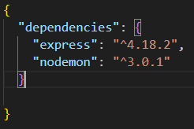
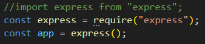
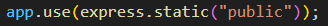
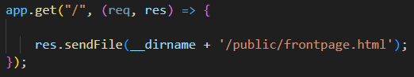
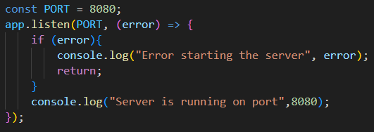

Return to Frontpage
Setting up a node.js project with express:
package.json

package.json is a key configuration file in a Node.js project. It contains metadata about the project, as well as various configuration options and dependencies. This file is essential for managing Node.js projects.
Like for example in the image above you can see i have 2 dependencies in this project i want to use
npm install express
You write "npm install express" in the terminal after making an empty package.json.
This will then install express in the project, and add the dependencies in the package.json, and add the folder "node_modules" to the project
app.js

app.js is the start file in a node.js project. This is where you setup express like shown above
app.use(express.static("public"))

app.use(express.static("public")) is a function built into Express. This is used to serve static files such as images, CSS files, and JavaScript files.
app.get

app.get is a function built into Express. This is used to send a response to the client when a request is made to the specified path. In the example above, as a response the client will get the file frontpage.html when they make a request to the path "/".
app.listen

app.listen is a function built into Express. This is used to start a server that listens for requests on the specified port. In the example above, the server will listen for requests on port 8080.
node_modules
node_modules is a folder that is created when you install dependencies in your project. This folder contains all the dependencies you have installed in your project